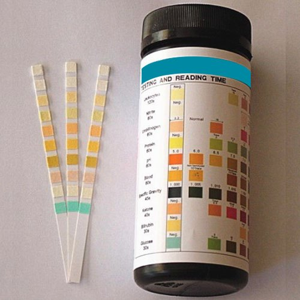
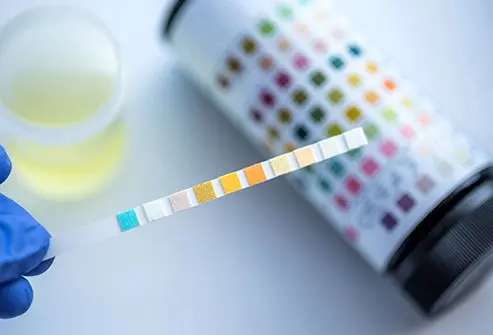
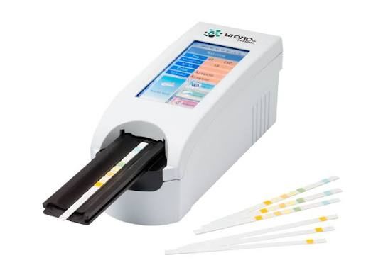

Urine Test Strip Reader System
A digital system designed to assist in reading and organizing urine test strip parameters for laboratory screening and academic demonstration.
The system provides a structured interface for test observation, parameter analysis and result reporting.
View Test InformationSystem Features
Strip Reading
Organizes observations obtained from multiple reagent pads on a urine test strip.
Parameter Analysis
Presents important urine parameters in a structured and easy-to-read format.
Result Reporting
Helps maintain consistent presentation of screening results for review.
Featured Items


